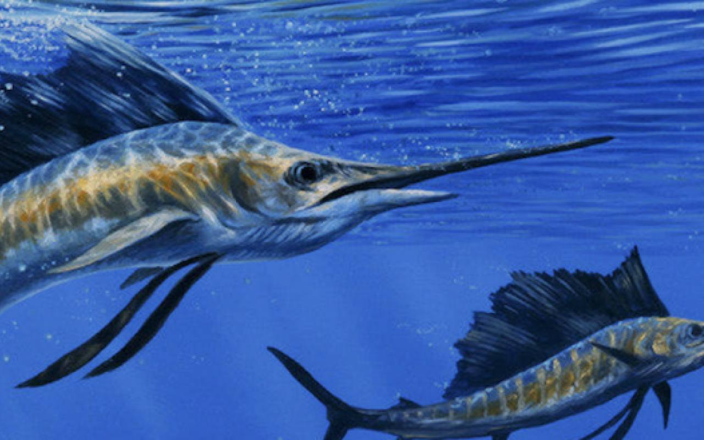
Fishing reports, seasons, festivals, where to eat and what we have been up to since 2017.
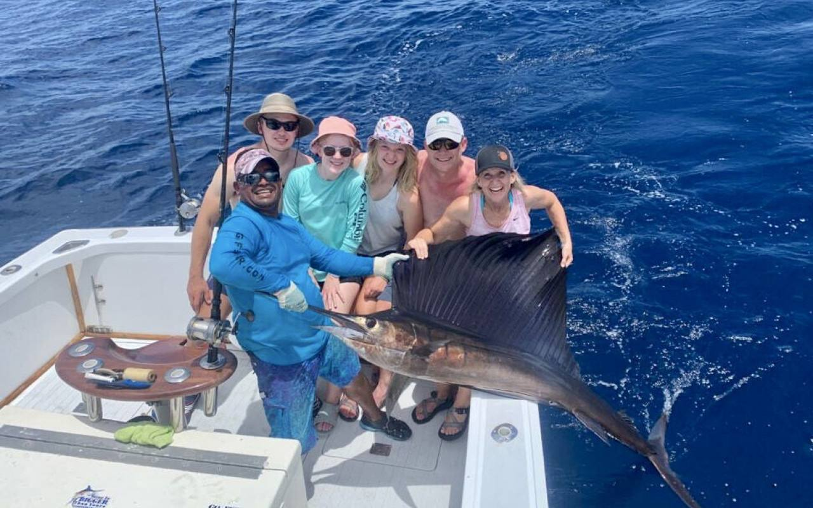
Plan the perfect family fishing vacation in Costa Rica. Fun, adventure, and relaxation for everyone with Go Fish Costa Rica.…
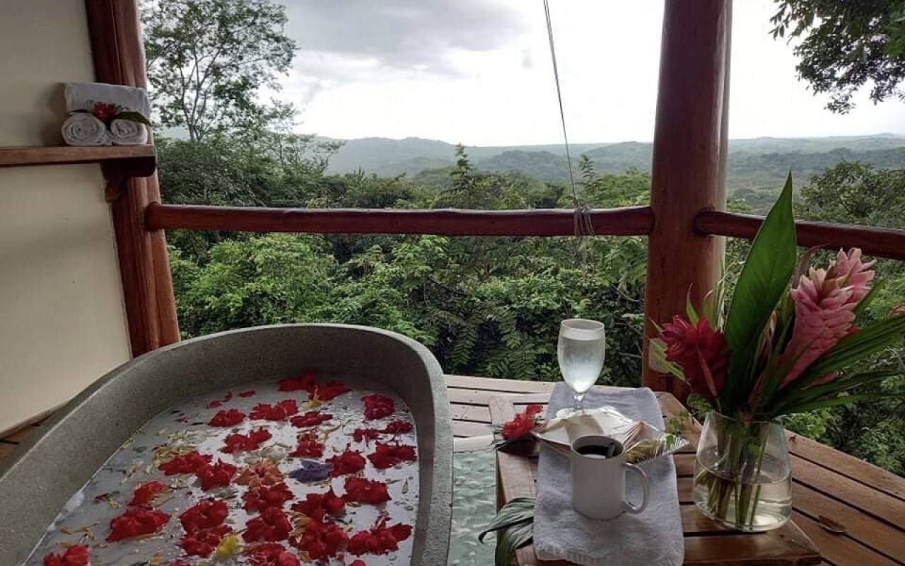
Unwind with a relaxing Costa Rica vacation. Let Go Fish Costa Rica plan your perfect getaway with fishing, tours, and adventures.…
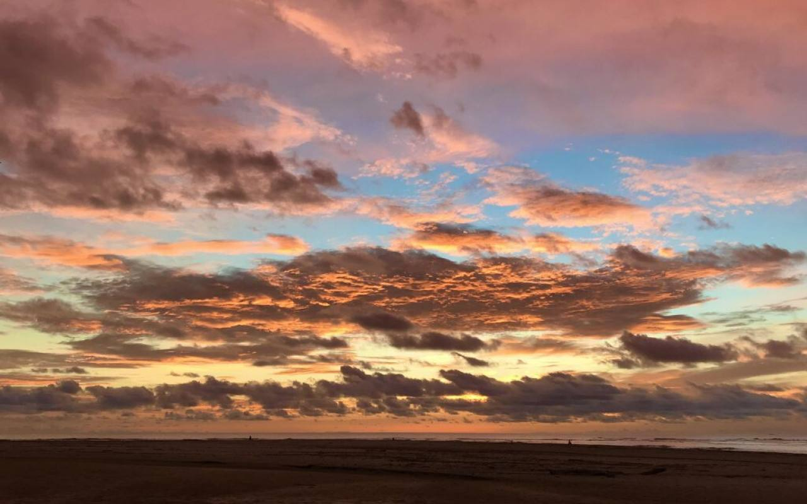
Discover why Tamarindo is a must-visit during Costa Rica's rainy season with fewer crowds, lush landscapes, and unique adventures.…
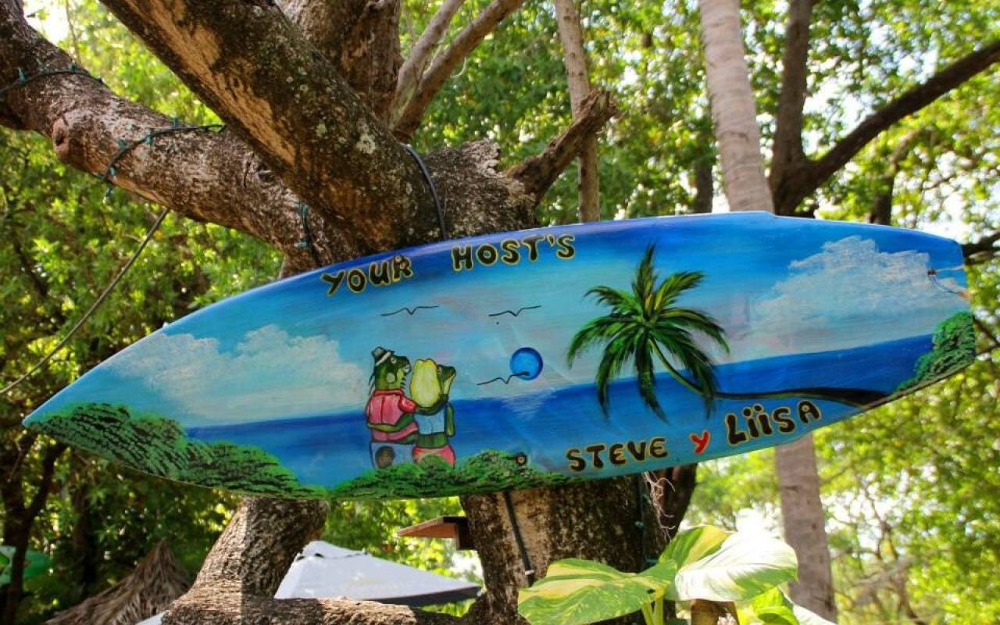
Go Fish Costa Rica celebrates a decade of being one of the top sport fishing charters in Tamarindo, Costa Rica.…
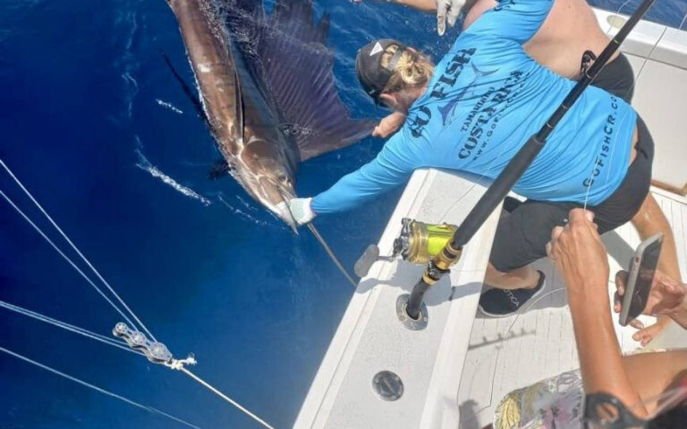
Learn how sport fishing in Costa Rica supports both the local economy and the environment through sustainable tourism practices.…
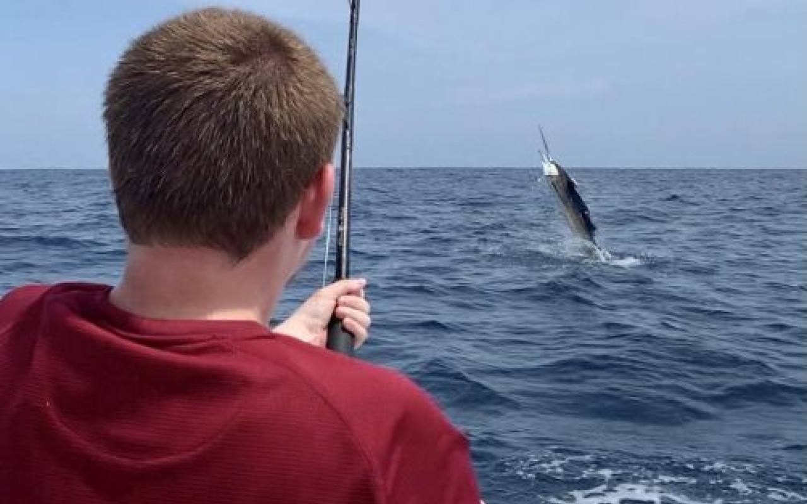
Enjoy a day of family-friendly fishing fun in Flamingo, Costa Rica. Combine competition and technology for an exciting adventure on the wate…
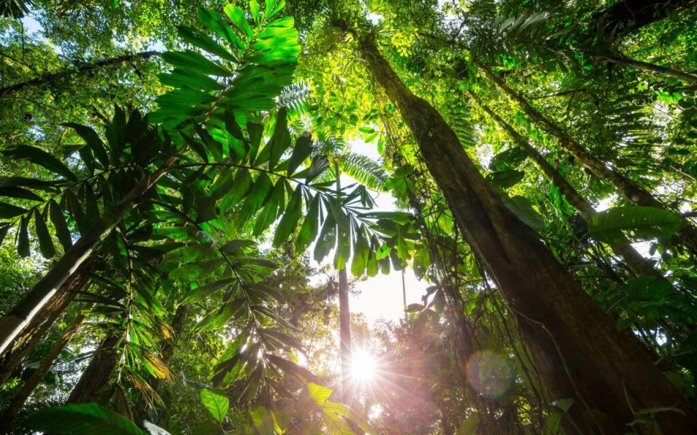
Explore Costa Rica's diverse microclimates, from lush rainforests to sunny beaches, offering unique adventures and natural beauty year-round…
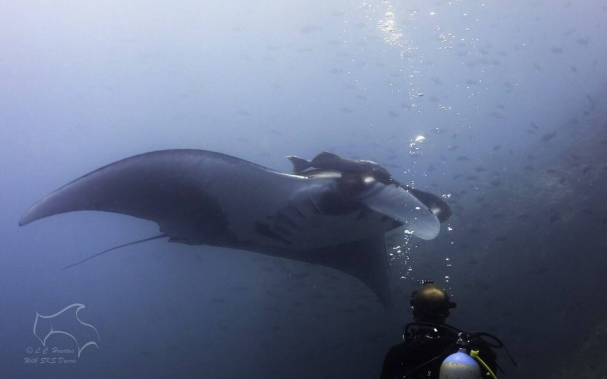
Dive into the ultimate scuba adventure in Costa Rica. Discover vibrant marine life, crystal-clear waters, and unforgettable diving experienc…
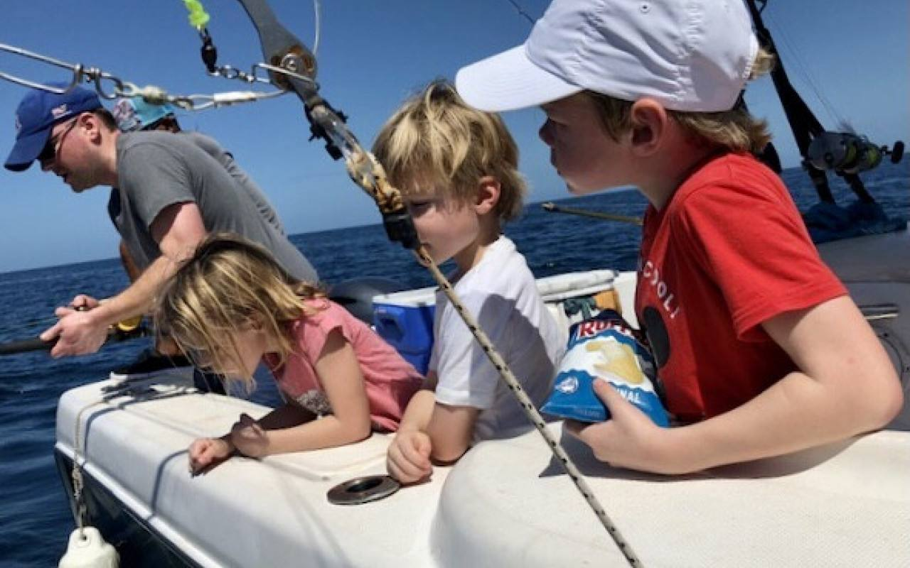
Reignite family bonds with an adventure-filled vacation in Costa Rica. Discover family-friendly activities and unforgettable experiences.…
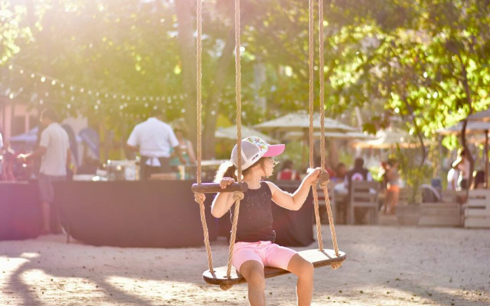
Learn how Costa Rica's natural environment and healthy lifestyle can boost your immune system and improve overall well-being.…
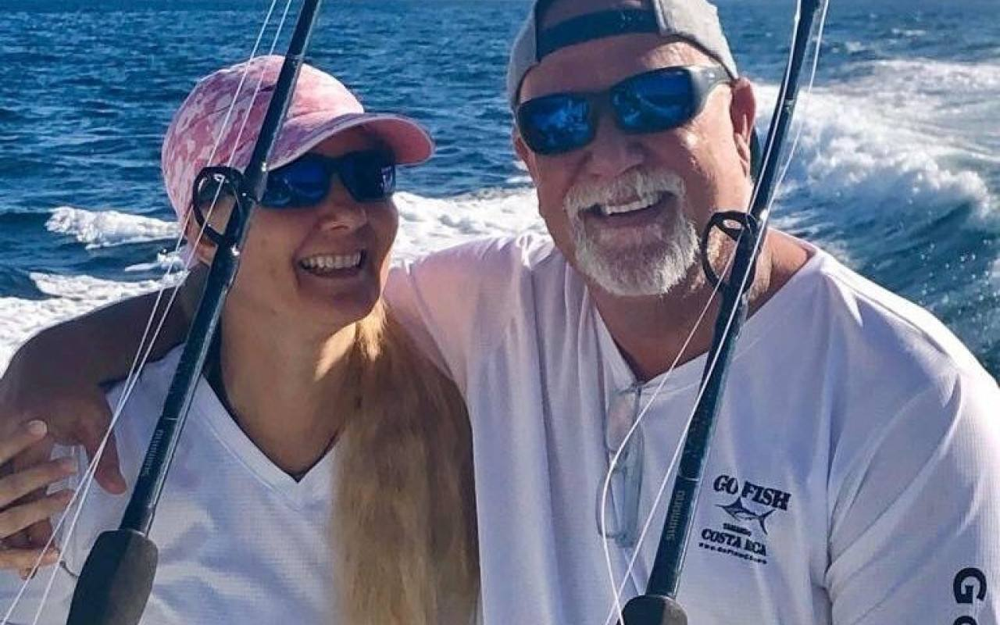
Go Fish Costa Rica reflects on supporting the community and environment while building a sustainable future for fishing in Costa Rica.…
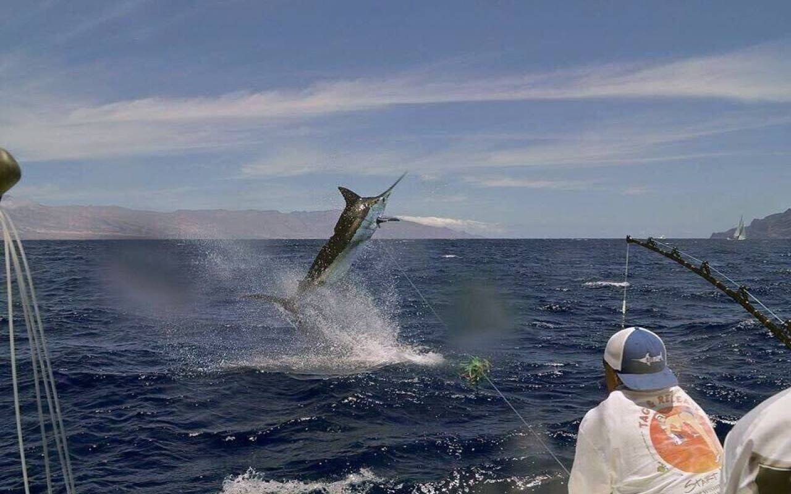
Experience the adrenaline of marlin fishing in Costa Rica. Learn about the thrill and challenge of battling these mighty creatures with Go F…